PHASE 8 · AWAITING DAN'S VISUAL REVIEW
A staggered commercial street
All 22 businesses retained: 11 on each side. Labels identify the four existing storefront assets. Screenshots are actual Unity camera renders at identical before/after positions, 1920 × 1080. North is up; west is left. Hover a label for its site and sign.
M Corner MarketD Hilltop DinerA Auto ServiceG General Store
Compare: the original paired labels and uniform gaps with the independent rows below. The wide south-side gap near the east bend and the north-side gap in the middle occur at different places. Paving follows each new frontage; woodland remains open between sites.
BEFORE
AFTER
Road-level comparison · both directions
Six fixed road-level viewpoints cover the west, center and east parts of the commercial stretch. These are camera evidence; the separate drive report records the ordinary-frame vehicle tests.
Westbound · camera station x=-460 m
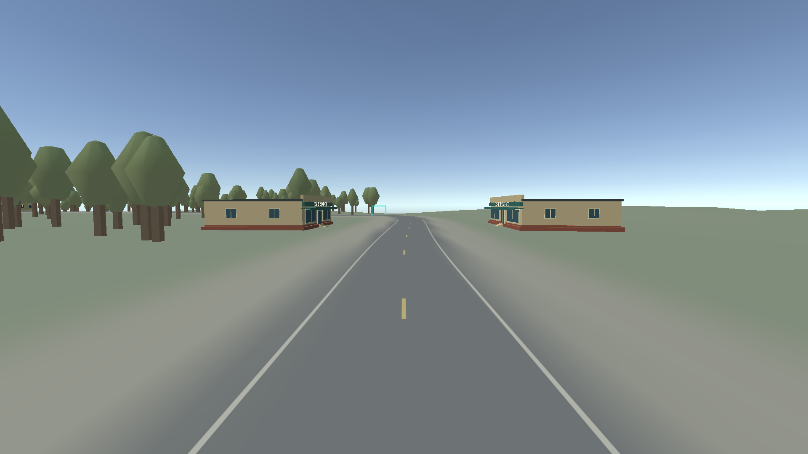
BEFORE · Aligned storefront pairs, repeated spacing.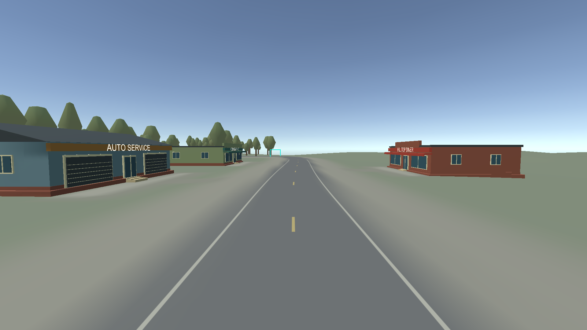
AFTER · Independent store order, staggered fronts and coordinated paving.Eastbound · camera station x=-460 m
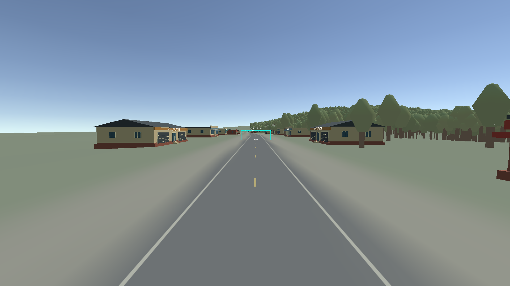
BEFORE · Aligned storefront pairs, repeated spacing.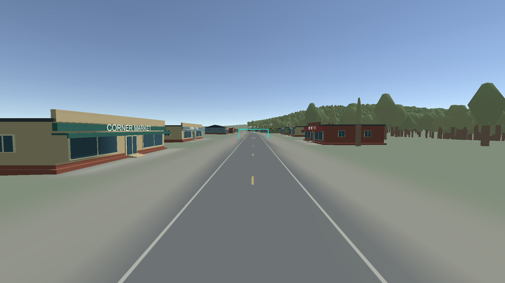
AFTER · Independent store order, staggered fronts and coordinated paving.Westbound · camera station x=-160 m
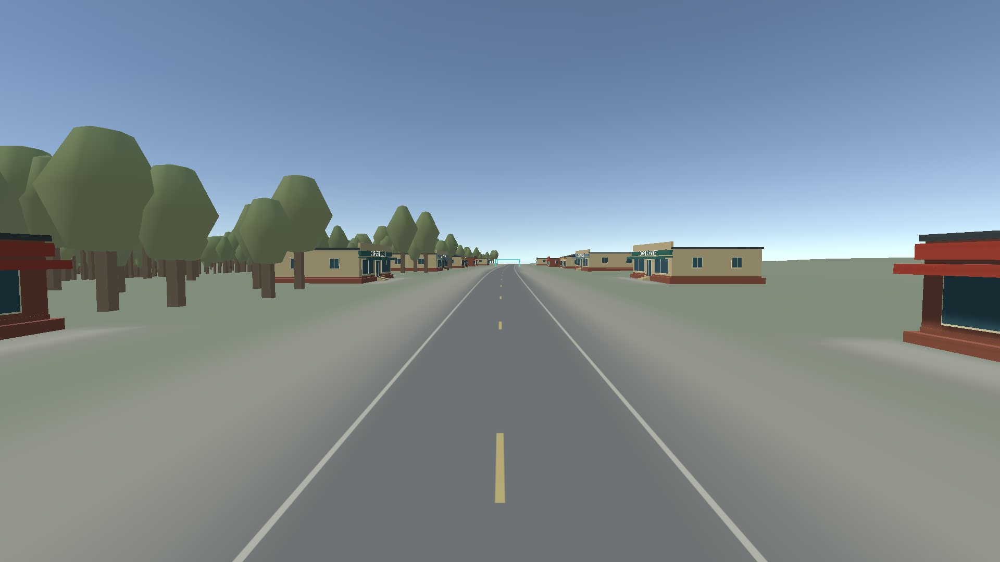
BEFORE · Aligned storefront pairs, repeated spacing.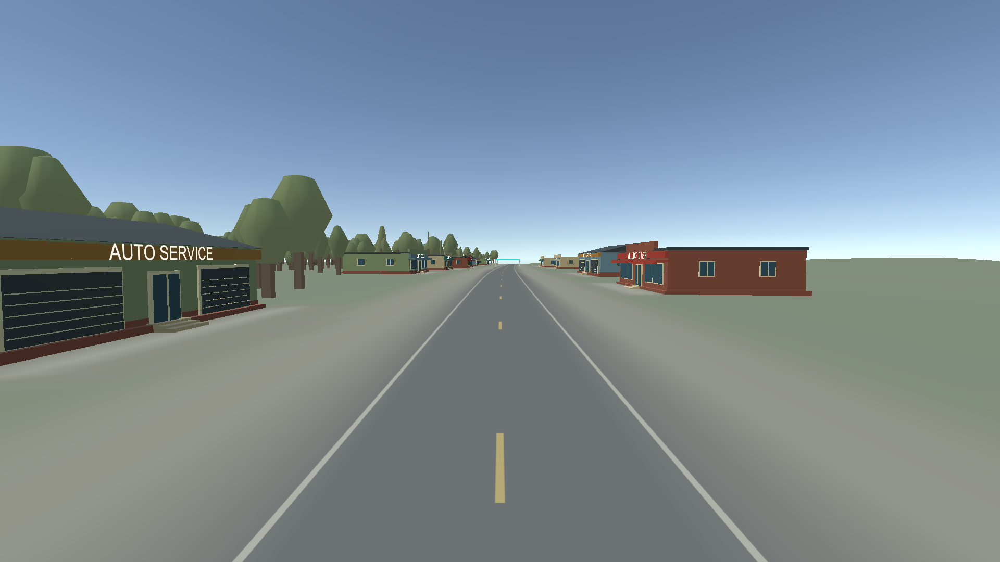
AFTER · Independent store order, staggered fronts and coordinated paving.Eastbound · camera station x=-160 m
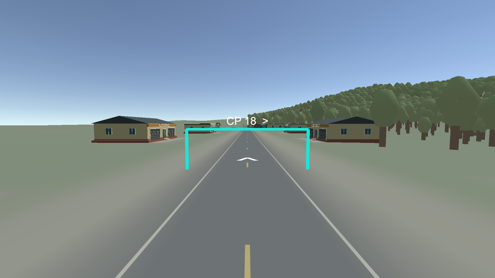
BEFORE · Aligned storefront pairs, repeated spacing.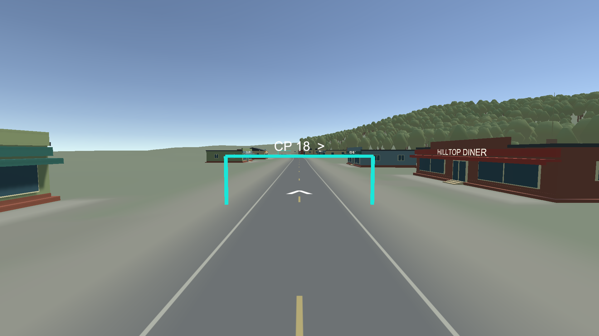
AFTER · Independent store order, staggered fronts and coordinated paving.Westbound · camera station x=140 m
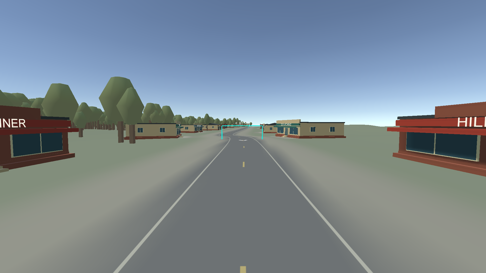
BEFORE · Aligned storefront pairs, repeated spacing.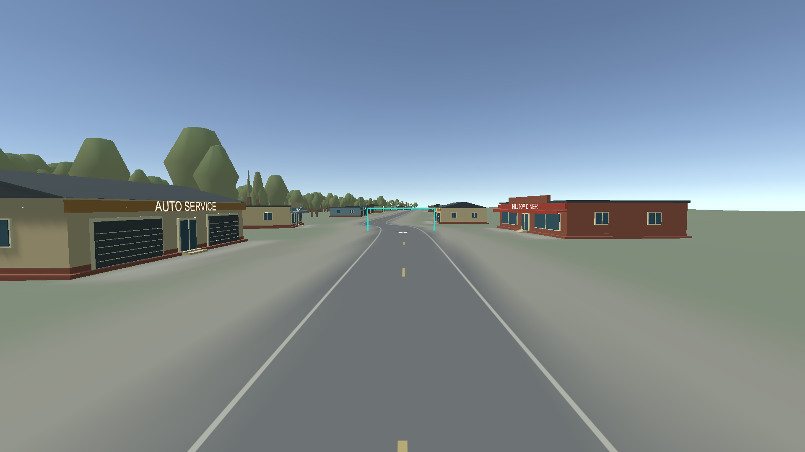
AFTER · Independent store order, staggered fronts and coordinated paving.Eastbound · camera station x=140 m
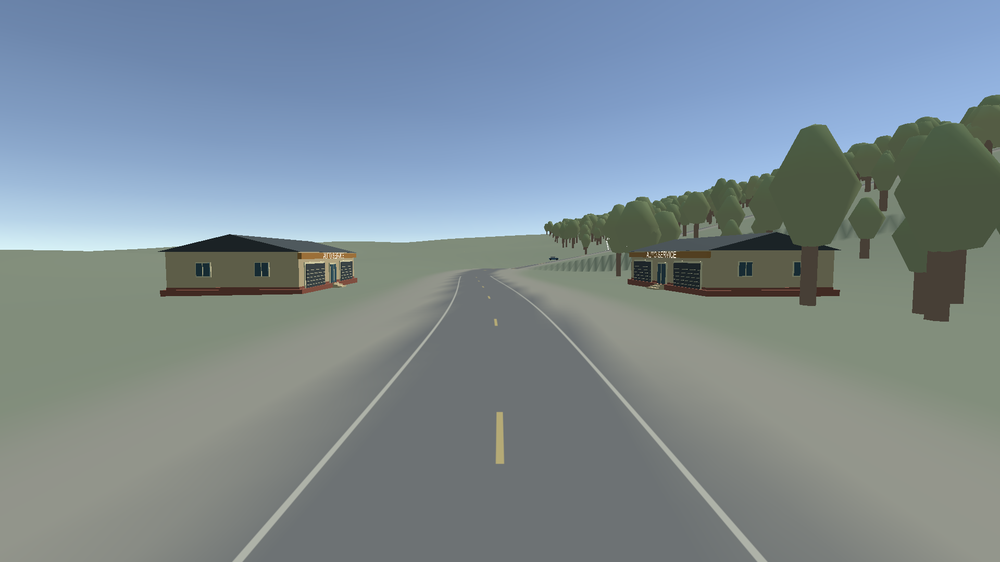
BEFORE · Aligned storefront pairs, repeated spacing.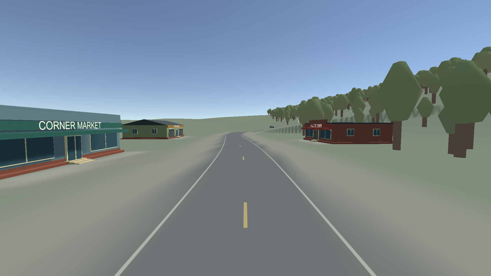
AFTER · Independent store order, staggered fronts and coordinated paving.Review checklist
- Drive both ways: do the store order and irregular gaps feel natural?
- Check storefronts, foundations, paving and driveway access.
- Confirm the restrained colors and preserved woodland fit the low-poly street.
Validation and authoring notes · Exact site inventory